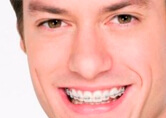
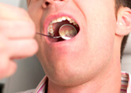
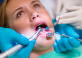
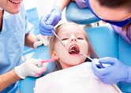
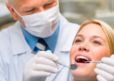

Conoce nuestras especialidades, siempre enfocados en brindar un servicio personalizado.
Es el tratamiento de las malposiciones dentarias con aparatos fijos o removibles. Cuyo objetivo final es restaurar la posición correcta de los dientes para que cumplan su función adecuada.
Tratamiento de las enfermedades de las encías y tejidos duros que rodean al diente.
Especialidad que soluciona problemas relacionados con la salud bucal y la armonía estética de la boca en su totalidad, de manera rápida y sin traumatismos.

Tratamiento de los problemas que afectan al tejido interno del diente (nervio). También es llamado tratamiento de conducto.
Especialidad que se ocupa de los problemas dentales en niños.
Tratamientos encaminados a solucionar los problemas primarios que tienen que ver con la boca, dientes y otras estructuras. Representa el primer contacto del paciente con el odontólogo.
